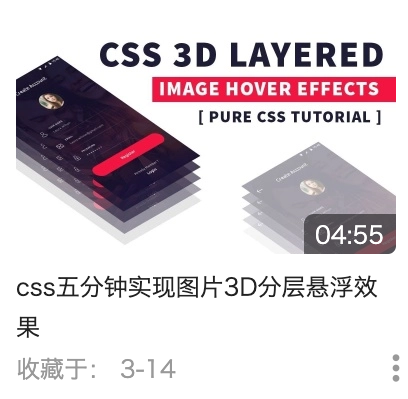
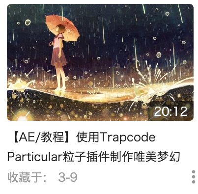

NEW FINDS&IDEAS
对于纸牌游戏的实现方式，可以通过对card类添加组值来表示某一卡片的位置信息，从而在点击或移动中判断是否点击或移动到某一张卡上，但是这样重复的无聊的代码太多，是一种愚笨的实现方式，可能还会有更好的方法。

USERS I FOLLOW
我接触这位老师也是机缘巧合，无意中碰到。发现老师制作教程视频时间已经不短，但其实关注的人并不是很多，但老师仍不断坚持，视频质量亦佳。
看他的视频，大多都以实例为依托来讲解AE的各种使用方法或操作技巧，对我个人入门AE确实有很大的帮助。其视频丰富程度并不只包含AE，还涉及C4D、PS等方面，对我个人来说有许多需要学习的地方，想必对其他新手或老手也有多少借鉴之处，故加以推介。
此外老师还有一个群聊，他将教学中涉及的各种插件、甚至是视频中进行操作的源文件都放在群文件中，其实这对于新手的入门是一种非常舒服的方式。也可以与群中的大佬做技术上的交流，对于个人的提升还是非常有帮助的。
（所有言论均为个人观点）

无意中发现的css使用方式，视频中的样式表使用方法是我从来没有接触过的，突然意识到自己的css只停留在了能够应付普通的网页编程上，有很多没有接触的东西。
由这个视频也打开了我对css的更深入的学习

AE的粒子插件的使用，在cyj老师的视频中曾讲过particular粒子效果，这个视频也是对其的应用，主要还是能发先其实u2b上的学习资源要远比国内多得多。